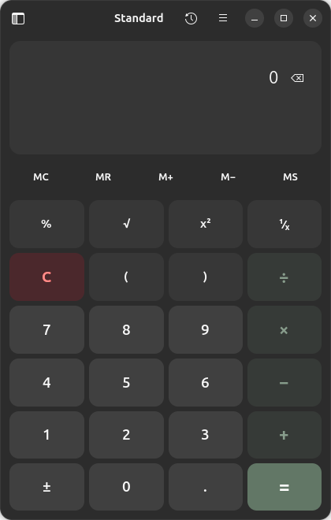

Calculator for Ubuntu
Scientific, programmer, graphing and finance calculator

About
Standard, scientific, programmer, graphing, unit, currency, date and finance calculator. Finance mode estimates loan repayment and savings growth, and works out tax (GST, VAT) and discounts. The app is installed system-wide for every account on this computer, like the built-in applications.
Open HRHsofts Setup to add or remove it.
Install
From the terminal (adds the signed HRHsuite repository so Calculator keeps itself updated):
wget -qO- https://hrhsofts-repos.github.io/apt/install.sh | sudo sh -s -- calculatorIf the repository is already set up, or on HRHsofts Ubuntu:
sudo apt install hrhsofts-calculatorOr download the .deb and install it with App Center or sudo apt install ./hrhsofts-calculator_1.1.2-1_all.deb.
- Package
hrhsofts-calculator- Version
- 1.1.2
- Released
- 2026-11-09
- Size
- 70.8 KB
- SHA-256
a49b338782d9714df9e912e6b1364f38a8d089a9f6fe3e4e5512205232b84036- License
- GNU GPL 3.0 or later (free software)
- Requires
- Ubuntu 26.04 or later, 64-bit (amd64)
What's new
Version 1.1.2 · 09 Nov 2026
- Check for Updates in the main menu: new versions are downloaded from the HRHsuite update service and installed after one password prompt
- A notification offers new versions automatically, at most once a day
Version 1.1.1 · 08 Nov 2026
- Finance mode works out tax (GST, VAT) and discounts, and remembers the values typed
- Variables window, copy history, remove single history entries, and Up/Down recall in Programmer mode
- New functions: variance, population standard deviation, product, asec, acsc, sech, csch, coth
- Deeply nested brackets, damaged settings and saved values no longer stop the app
- Correct results for huge angles, mod(a, b), programmer remainders and unit names shared by two measures
- The decimal comma preference now applies to pasting, units, currency and finance
Version 1.1.0 · 30 Oct 2026
- Finance mode estimates monthly loan payments, amortized payoff time, extra-payment savings and compound savings growth
- Correct calendar differences for end-of-month and leap-day dates
Version 1.0.63 · 27 Oct 2026
Calculator released as its own HRHsofts Suite package.
All HRHsofts apps · Get HRHsofts Ubuntu with Calculator preinstalled